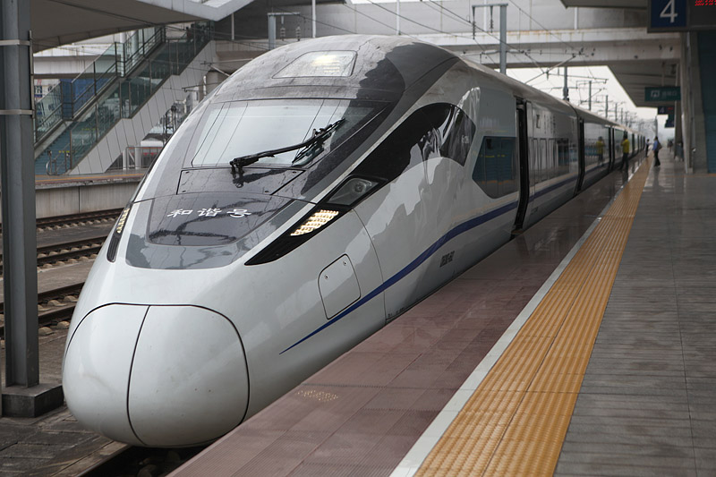

Bombardier Zefiro 380
In September 2009, Bombardier announced an order for eighty Zefiro 380 high-speed trains by the Chinese Ministry of Railways (MOR) to be produced at Bombardier's joint venture Sifang (Qingdao) Transportation Ltd. The order of twenty 8-car sets and sixty 16-car sets was estimated to be worth 27.4 billion RMB (approx €2.7 billion or $4 billion). The value of Bombardier's share is estimated at €1.3 billion. [21][22]
Under China railways use these trains have been designated CRH1C (8-car set) and CRH1D (16-car set).[12] which was in December 2010 revised to CRH380C and CRH380CL and once again to CRH380D (8-car set) & CRH380DL (16-car set) according to the new numbering system.[23]
As of the most recent news, the order has been amended to include only seventy 8-car sets, designated as the CRH380D. Orders for the 16-car DL sets were converted to D sets in late 2011.[15]
All the 85 trainsets have been delivered and are currently operated by Shanghai Railway Bureau & Chengdu Railway Bureau.